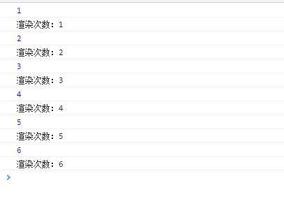
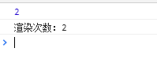

简介
Hook 是 React 16.8 的新增特性。它可以让你在不编写 class 的情况下使用 state 以及其他的 React 特性。
我们知道，functional component在使用的时候有一些限制，比如需要生命周期、state的时候就不能用functional component。而有了Hooks，你就可以在funtional component里，使用class component的功能:props，state，context，refs，和生命周期函数等等。
虽然Hooks已经有要取代正宫class的趋势了，但是react目前没有计划抛弃class，所以不要慌，你还是可以跟往常一样使用class。
为什么引入hook
组件难以理解
在使用class组件构建我们的程序时，他们各自拥有自己的状态，业务逻辑的复杂使这些组件变得越来越庞大，各个生命周期中会调用越来越多的逻辑，越来越难以维护。Hook 将组件中相互关联的部分拆分成更小的函数（比如设置订阅或请求数据）。而并非强制按照生命周期划分。你还可以使用 reducer 来管理组件的内部状态，使其更加可预测。使用Hook，可以让你更大限度的将公用逻辑抽离，将一个组件分割成更小的函数，而不是强制基于生命周期方法进行分割。
组件嵌套问题
如果我们需要抽离一些重复的逻辑，就会选择 HOC 或者 render props 的方式。这种方式首先提高了 debug 的难度，并且也很难实现共享状态。
但是通过 Hooks 的方式去抽离重复逻辑的话，一是不会增加组件的嵌套，二是可以实现状态的共享。
使用函数代替class
相比函数，编写一个class可能需要掌握更多的知识，需要注意的点也越多，比如this指向、绑定事件等等。另外，计算机理解一个函数比理解一个class更快。Hooks让你可以在class之外使用更多React的新特性。
减少状态逻辑复用的风险
Hook和Mixin在用法上有一定的相似之处，但是Mixin引入的逻辑和状态是可以相互覆盖的，而多个Hook之间互不影响，这让我们不需要在把一部分精力放在防止避免逻辑复用的冲突上。
在不遵守约定的情况下使用HOC也有可能带来一定冲突，比如props覆盖等等，使用Hook则可以避免这些问题。
函数组件无 this 问题
不需要通过bind函数改变事件的this指向问题。
Hook API 索引
大致所有的hook都在下面的列表中，但是比较重要的hook是State Hook、Effect Hook这两个hook。
- 基础 Hook
- useState
- useEffect
- useContext
- 额外的 Hook
- useReducer
- useCallback
- useMemo
- useRef
- useImperativeHandle
- useLayoutEffect
- useDebugValue
State Hook、Effect Hook
State Hook(useState通过在函数组件里调用它来给组件添加一些内部state。)Effect Hook(useEffect就是一个Effect Hook，给函数组件增加了操作副作用的能力。)
useState
语法
1 | export default function UseStateHook () { |
通过useState()返回的状态 (count) 与传入的第一个参数 (initialState) 值相同。
注意
React会确保setState函数的标识是稳定的，并且不会在组件重新渲染时发生变化。这就是为什么可以安全地从useEffect或useCallback的依赖列表中省略setState。
函数式更新
同时也会返回更新state函数setCount,两种用法直接传要更新的值，也可以传fucntion但是要return出要更新的值。
1 | <button onClick={() => setCount(1)}> |
注意 与
class组件中的setState方法不同，useState不会自动合并更新对象。你可以用函数式的setState结合展开运算符来达到合并更新对象的效果。
1 | setState(prevState => { |
useReducer是另一种可选方案，它更适合用于管理包含多个子值的state对象。
惰性初始 state
initialState 参数只会在组件的初始渲染中起作用，后续渲染时会被忽略。也可以传入一个函数计算并返回初始的state。
1 | const [count setCount] = useSate(() => { |
useEffect
useEffect 就是一个 Effect Hook，给函数组件增加了操作副作用的能力。它跟 class 组件中的 componentDidMount、componentDidUpdate 和 componentWillUnmount 具有相同的用途，只不过被合并成了一个 API。（我们会在使用 Effect Hook 里展示对比 useEffect 和这些方法的例子。）
语法
useEffect方法接收传入两个参数：
- 1.回调函数：在第组件一次render和之后的每次update后运行，React保证在DOM已经更新完成之后才会运行回调。
- 2.状态依赖(数组)：当配置了状态依赖项后，只有检测到配置的状态变化时，才会调用回调函数。
1 | useEffect(() => { |
清除 effect
1 | useEffect(() => { |
为防止内存泄漏，清除函数会在组件卸载前执行。另外，如果组件多次渲染（通常如此），则在执行下一个 effect 之前，上一个 effect 就已被清除。
effect 的执行时机
与 componentDidMount、componentDidUpdate 不同的是，在浏览器完成布局与绘制之后，传给 useEffect 的函数会延迟调用。
虽然 useEffect 会在浏览器绘制后延迟执行，但会保证在任何新的渲染前执行。React 将在组件更新前刷新上一轮渲染的 effect。
1 | export default function UseStateHook() { |
执行上面的代码，并且点击几次按钮，执行顺序如下：
如果我们加上浏览器渲染，他会在页面渲染之执行，运行如下：
模拟componentDidMount
componentDidMount等价于useEffect的回调仅在页面初始化完成后执行一次，当useEffect的第二个参数传入一个空数组时可以实现这个效果。
1 | function useDidMount(callback) { |
官方不推荐上面这种写法，因为这有可能导致一些错误。
模拟componentWillUnmount
1 | function useUnMount(callback) { |
不像
componentDidMount或者componentDidUpdate，useEffect中使用的effect并不会阻滞浏览器渲染页面。这让你的app看起来更加流畅。
useContext
语法
1 | const value = useContext(MyContext); |
接收一个 context 对象（React.createContext 的返回值）并返回该 context 的当前值。当前的 context 值由上层组件中距离当前组件最近的 <MyContext.Provider> 的 value prop 决定。
1 | // Context 可以让我们无须明确地传遍每一个组件，就能将值深入传递进组件树。 |
重写ThemeButton组件，用useContext形式：
1 | function ThemeButton () { |
别忘记 useContext 的参数必须是 context 对象本身：
- 正确：
useContext(ThemeContext) - 错误：
useContext(ThemeContext.Consumer) - 错误：
useContext(ThemeContext.Provider)
调用了 useContext 的组件总会在 context 值变化时重新渲染。如果重渲染组件的开销较大，你可以 通过使用 memoization 来优化。
如果你在接触 Hook 前已经对 context API 比较熟悉，那应该可以理解，useContext(MyContext) 相当于 class 组件中的 static contextType = MyContext 或者 <MyContext.Consumer>。
useContext(MyContext) 只是让你能够读取 context 的值以及订阅 context 的变化。你仍然需要在上层组件树中使用 <MyContext.Provider> 来为下层组件提供 context。
useCallback
如果你需要一个不会随着组件更新而重新创建的 callback
useMemo
useMemo 可以用来优化函数组件重渲染的性能。函数组价有React.memo(高阶组件)，它类似类组件的React.PureComponent；它们都是React的顶层API。
useMemo 与 memo
React.memo针对的是一个函数组件的渲染是否重复执行，而 useMemo 定义的是一个函数逻辑是否重复执行。
语法
它的语法和useEffect很像，把“创建”函数和依赖项数组作为参数传入 useMemo。
参数：
- 第一个参数是是需要执行的逻辑函数
- 第二个参数是这个逻辑依赖输入变量组成的数组，如果不传每次都会执行逻辑函数， 传入空数组只会执行一次。（非必传）
1 | import React, { useState, useMemo } from 'react'; |
运行结果如下：

可以在依赖输入做判断优化渲染次数：
1 | const renderCount = useMemo(() => { |

你可以把 useMemo 作为性能优化的手段，但不要把它当成语义上的保证。
注意 依赖项数组不会作为参数传给“创建”函数。然虽然从概念上来说它表现为：所有“创建”函数中引用的值都应该出现在依赖项数组中。未来编译器会更加智能，届时自动创建数组将成为可能。
我们推荐启用 eslint-plugin-react-hooks 中的 exhaustive-deps 规则。此规则会在添加错误依赖时发出警告并给出修复建议。
useRef
useRef 返回一个可变的 ref 对象，使用useRef Hook，你可以轻松的获取到dom的ref。useRef 主要有两个使用场景：
- 获取子组件或者
DOM节点的句柄 - 渲染周期之间的共享数据的存储
大家可能会想到 state 也可跨越渲染周期保存，但是 state 的赋值会触发重渲染，但是 ref 不会，从这点看 ref 更像是类属性中的普通成员。
1 | function TextInputWithFocusButton() { |
useRef() 和自建一个 {current: ...} 对象的唯一区别是，useRef 会在每次渲染时返回同一个 ref 对象。
模拟实现ComponentDidUpdate
componentDidUpdate就相当于除去第一次调用的useEffect，我们可以借助useRef生成一个标识，来记录是否为第一次执行：
1 | function useDidUpdate(callback, prop) { |
请记住，当
ref对象内容发生变化时，useRef并不会通知你。变更.current属性不会引发组件重新渲染。如果想要在 React 绑定或解绑DOM节点的ref时运行某些代码，则需要使用回调ref来实现。
hook使用事项
Hook 本质就是 JavaScript 函数，但是在使用它时需要遵循两条规则。
只在最顶层使用 Hook
不要在循环，条件或嵌套函数中调用 Hook， 确保总是在你的 React 函数的最顶层调用他们。
使用范围
不要在普通的 JavaScript 函数中调用 Hook。只能在 React 的函数组件中调用 Hook。不要在其他 JavaScript 函数中调用。
Hook的提出主要就是为了解决class组件的一系列问题，所以我们能在class组件中使用它。
参考
Hook 概览
Hook API 索引
从Mixin到HOC再到Hook
React 新特性 Hooks 讲解及实例(三)
React 新特性 Hooks 讲解及实例(四)